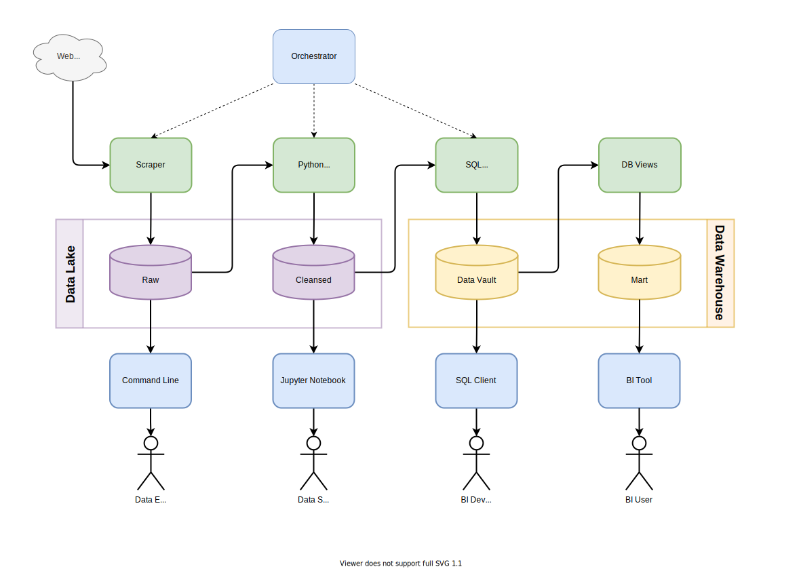
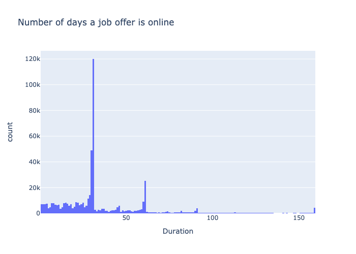
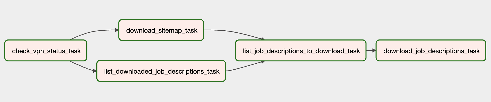
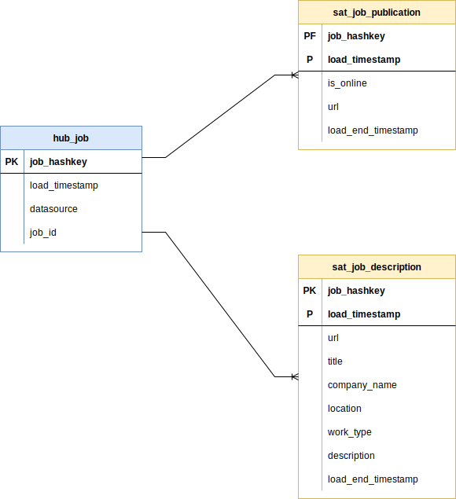

Architecture Overview
Which technologies are the most demanded at the moment?
How the demand for a particular technology evolves during the time?
How long is a job offer online until it is taken offline?
How long is a job offer online until it is taken offline?

Data Ingestion
Data Lake
Data Warehouse
Data Ingestion
The data is ingested via web scraping
The data source is the biggest recruitment platform in Germany
From this data source, we scrape two entities:
Sitemap
Job Description
Sitemap
The sitemap is format is just plain XML
It contains all the job descriptions URLs that are currently online
The URL contains the job id, which helps us track when a job is online or offline
Job Description
A job description is a full HTML page
It contains all the public available details about the job offer:
company, location, job title, and full descriptionWeb Scrapping
The Sitemap is scrapped via regular HTTP requests
But due to the data source restrictions, we need to simulate real user traffic to crawl and download the Job Descriptions
In order to simulate web interactions, I use the Playwright headless browser
Both entities Sitemap and Job Description are stored in the Data Lake raw layer as they are without any kind of transformation.
Job Orchestration
Airflow is used in order to orchestrate and schedule the data ingestion
The web scrapping airflow dag is as follows

Job Orchestration
Additional details:
Data Lake
It is where all ingested data is stored permanently
It is located at my computers file system but it could be easily relocated to cloud storage
It is divided in two layers:
Raw Layer
Cleansed Layer
Raw Layer
It stores the data in the exactly format as it is ingested, e.g. XML or HTML
The folder structure is as follows:
raw
└── <data_source>
├── <entity>
│ ├── <year>
│ │ ├── <month>
│ │ │ ├── <date>
│ │ │ │ ├── <hour>-<minute>-<second>
│ │ │ │ │ ├── <entity_id>.<file_ext>
│ │ │ │ │ ├── <entity_id>.<file_ext>
│ │ │ │ │ ├── ...
Here is an example of the data structure
raw
└── ѕtерѕtоոе
├── job_description
│ ├── 2021
│ │ ├── 10
│ │ │ ├── 03
│ │ │ │ ├── 21-00-00
│ │ │ │ │ ├── 7577548.html
│ │ │ │ │ ├── 7577549.html
│ │ │ │ │ ├── ...
I have being scraping the web source since October 2021
The current raw layer data size is around 275 GB
And it grows around 2 GB per day
Cleansed Layer
The cleansed layer contains data in Parquet format
Parquet is an open source, column-oriented data file format designed for efficient data storage and retrieval
This format enables easy and performant data exploration across the whole dataset
The data in the cleansed layer is populated by computing the raw layer data
This computation parses the entities in the raw layer
And discards corrupted data
Additional information:
The cleansed layer data is partitioned is as follows:
cleansed
└── <data_source>
├── <entity>
│ ├── year=<year>
│ │ ├── month=<month>
│ │ │ ├── day=<day>
│ │ │ │ └── part-0.parquet
│ │ │ ├── day=<day>
│ │ │ │ │ ├── ...
Here is an example of the cleansed layer structure
cleansed
└── ѕtерѕtоոе
├── job_description
│ ├── year=2021
│ │ ├── month=10
│ │ │ ├── day=03
│ │ │ │ └── part-0.parquet
│ │ │ ├── day=04
│ │ │ │ │ ├── ...
The cleansed layer is also the data source for the data warehouse
The data contained in the Parquet files are actually accessed directly by the data warehouse
Data Warehouse
The Data Warehouse is based on PostgreSQL
PostgreSQL might not be the best choice for a datawarehouse since it is row-column-oriented but in this case we have reduced number of columns and a relative small data size
Another advantage of PostgreSQL is that I can run it easily on my computer via Docker so that I can avoid cloud service costs
In order to ingest data into the data warehouse
We mount the parquet files from the data lake cleansed layer
Using the following foreign data wrapper extension:
Once the data is mounted in the staging tables
dbt scripts are used process the staging data
And the hub and dimension tables will be populated with this data
The data model in the data warehouse is as follows:

Architecture Overview
Thanks for your attention!